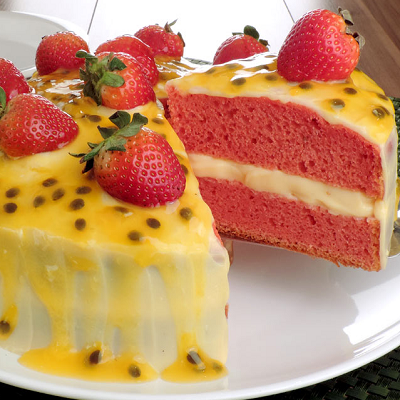

Bolo de Morango e Maracujá com Mousse Cremosa
Ingredientes
Para a Massa (Pão de Ló Simples)
- 4 ovos
- 2 xícaras de açúcar
- 2 xícaras de farinha de trigo
- 1 xícara de água quente
- 1 colher de sopa de fermento em pó
- 1 colher de chá de baunilha
Para a Mousse de Maracujá (Recheio)
- 1 lata de leite condensado
- 1 lata de creme de leite (sem soro)
- 1/2 xícara de suco concentrado de maracujá (cerca de 3 maracujás)
Para a Geleia Rápida de Morango (Recheio/Cobertura)
- 300g de morangos picados
- 1/2 xícara de açúcar
- 1 colher de sopa de suco de limão
Para a Cobertura e Decoração
- 500ml de chantilly pronto ou creme de leite fresco batido com açúcar de confeiteiro
- Polpa de 1 maracujá (para decorar)
- Morangos inteiros e fatiados (para decorar)
Modo de preparo
1. Prepare a Geleia de Morango
- Em uma panela, misture os morangos picados, o açúcar e o suco de limão.
- Leve ao fogo médio por cerca de 10 a 15 minutos, mexendo ocasionalmente.
- Deixe ferver até os morangos se desmancharem e a calda engrossar ligeiramente. Reserve e deixe arrefecer completamente.
2. Prepare a Mousse de Maracujá
- No liquidificador, bata o leite condensado, o creme de leite e o suco de maracujá concentrado até obter um creme homogéneo e espesso.
- Leve ao frigorífico (geladeira) por, pelo menos, 30 minutos para firmar.
3. Prepare a Massa
- Pré-aqueça o forno a 180°C. Unte e enfarinhe uma forma redonda de 20-22cm.
- Na batedeira, bata os ovos com o açúcar até formar um creme fofo e claro. Adicione a baunilha.
- Alterne a adição da farinha de trigo peneirada e da água quente, misturando delicadamente.
- Por último, adicione o fermento em pó e misture levemente.
- Verta a massa para a forma e asse por cerca de 30-40 minutos.
- Deixe arrefecer completamente e corte o bolo em duas ou três camadas.
4. Montagem do Bolo
- Coloque a primeira camada do bolo no prato de servir. Pode regar com uma calda simples de água e açúcar, se desejar.
- Espalhe uma camada da mousse de maracujá.
- Por cima da mousse, espalhe uma camada da geleia de morango (reserve um pouco para a decoração final).
- Coloque a segunda camada de bolo e repita o recheio com o restante da mousse e geleia (ou use apenas o chantilly no topo, se preferir).
- Coloque a última camada de bolo.
- Cubra todo o bolo com o chantilly.
- Decore o topo do bolo com a polpa do maracujá reservada e os morangos frescos.
- Leve ao frigorífico (geladeira) por, no mínimo, 4 horas antes de servir.